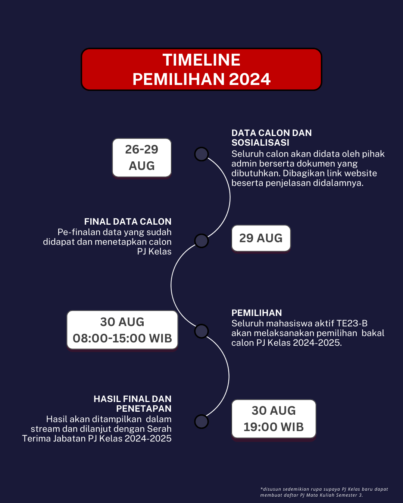
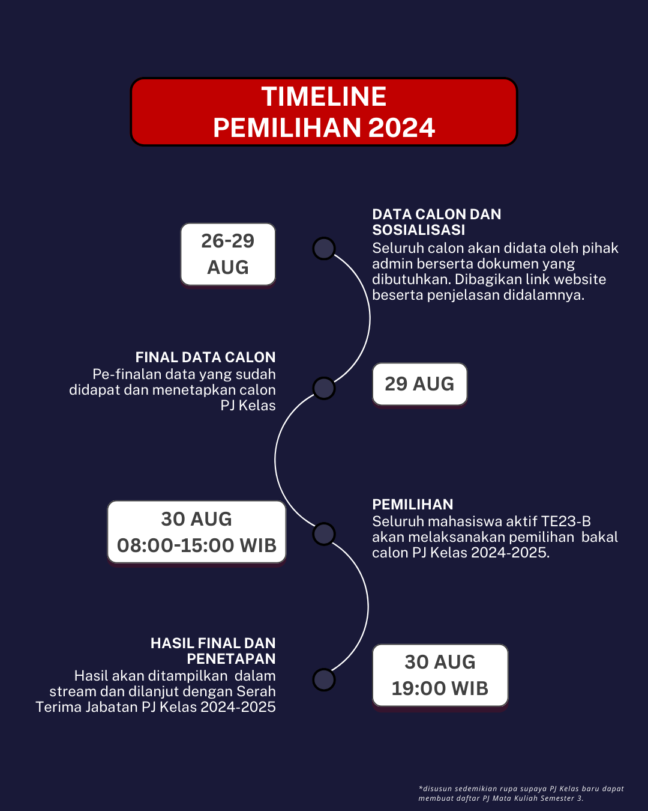

PEMBUKA
Pemilihan Umum merupakan momen penting untuk kehidupan perkuliahan kedepannya. Melalui pemilihan ini, kita dapat memilih pemimpin yang akan membawa kelas ini menuju masa depan yang lebih baik. Oleh karena itu, partisipasi aktif dari seluruh kelas ini sangatlah penting. Saya mengajak seluruh mahasiswa aktif teknik elektro kelas 23-B untuk menggunakan hak pilihnya dengan bijak dan bertanggung jawab. Pilihlah pemimpin yang memiliki integritas, kapabilitas, dan bertanggung jawab untuk membawa kelas ini ke arah yang lebih baik kedepannya. Mari kita bersama-sama menjaga suasana yang kondusif, aman, dan damai selama proses pemilihan berlangsung.
TENTANG
Dalam pemilihan kali ini, para kandidat adalah mahasiswa aktif jurusan elektro yang sedang menempuh studi hingga semester 3 (tiga) dan merupakan mahasiswa putra. Seluruh informasi mengenai kandidat dapat dilihat pada menu “CANDIDATE”, yang berisi nama lengkap dan foto dari calon. Untuk peraturan yang berlaku selama proses pemilihan, dapat diakses melalui menu “RULES”. Disana, Anda akan menemukan panduan lengkap mengenai tata cara pemilihan, kriteria penilaian, serta hak dan kewajiban para pemilih dan kandidat. Pastikan untuk membaca semua informasi dengan teliti agar dapat berpartisipasi dengan baik dalam pemilihan ini.
TUJUAN
Pemilihan umum yang diadakan pada periode ini bertujuan untuk memberikan kesempatan kepada mahasiswa merasakan peran sebagai “Penanggung Jawab Kelas”. Dengan demikian, mereka dapat mengembangkan pengalaman leadership di lingkungan perkuliahan. Dalam proses ini, mahasiswa akan belajar untuk memiliki rasa tanggung jawab yang tinggi dalam mengurus lapisan masyarakat terdekat, yaitu teman sekelasnya. Selain itu, pengalaman ini juga akan membantu mereka dalam mengasah kemampuan komunikasi, manajemen waktu, dan pengambilan keputusan yang efektif.
Menjadi “Penanggung Jawab Kelas” bukan hanya tentang mengatur dan mengelola kegiatan kelas, tetapi juga tentang membangun hubungan yang baik dengan teman sekelas dan dosen. Mahasiswa akan belajar bagaimana mendengarkan dan memahami kebutuhan dari aspirasi teman-temannya, serta mencari solusi yang terbaik untuk kepentingan bersama. Pengalaman ini juga akan mengajarkan mereka tentang pentingnya kerjasama tim dan bagaimana memotivasi orang lain untuk mencapai tujuan bersama.
Dengan demikian, diharapkan melalui pemilihan umum ini, mahasiswa tidak hanya mendapatkan pengalaman praktis dalam leadership, tetapi juga membangun karakter yang kuat dan tangguh. Mereka akan menjadi individu yang lebih percaya diri, bertanggung jawab, dan siap menghadapi berbagai tantangan di masa depan. Pemilihan umum ini adalah langkah penting dalam membentuk generasi pemimpin yang kompeten dan berintegritas tinggi.